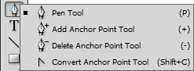
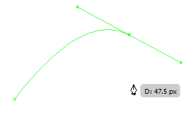
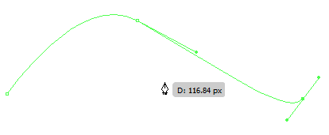
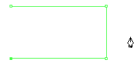
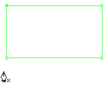
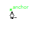
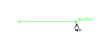
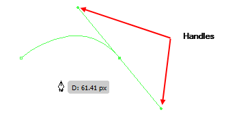
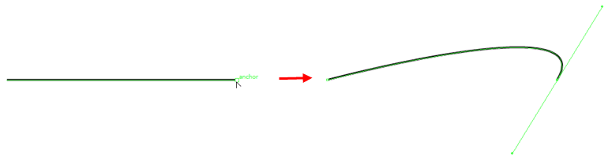
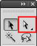

Welcome to the final part of the three-part series on creating a logo from a source file in Adobe Illustrator. In this last part we created most of the text in the logo. Now we have some text and a background. In this part we will use the Pen tool to create the final letter and finalise the logo.
Pen tool overview
The Pen tool is the defining tool of Illustrator. Using this tool and its related tools you can recreate any shape as a vector graphic.
Let’s review the tools.
Pen tool
The Pen tool is used to draw Bezier curves.
When several curves are combined this is referred to as a path.
Paths can be open or closed. A path is closed when the curve is connected to the original point in the path to form a shape.
 To draw a Bezier curve using the Pen tool:
- Select the Pen tool.
-
Click to place an anchor point.
 -
Click in two more locations to draw a straight lines from point-to-point.

Note: Click and drag when creating a new point to create anchor points with “handles” that can be rotated and dragged to adjust the angle of the curve.
 -
Hover over the original anchor point. The cursor icon changes to indicate that the path can be closed.

- Click the anchor point to close the path.
Add Anchor Point tool
With detailed paths you sometimes need additional anchor points to manipulate and shape finer details. Simply click anywhere on a path and this tool will add an additional anchor point that you can select and modify.
Delete Anchor Point tool
Sometimes we need to delete anchor points to correct lines, such as in the previous tutorial when we had a bulge in our “D”. Simply select this tool and click any anchor point to delete it from the design.
Convert Anchor Point tool
This tool can either convert:
- straight-line anchor points into curve anchor points with handles
- curve anchor points with handles into straight-line anchor points.
To convert an anchor point:
- Select the Convert Anchor Point tool.
- Either:
-
click a curve anchor point to convert it to a straight-line anchor point
-
click and drag a straight-line anchor point to convert it to a curve anchor point

-
click a curve anchor point to convert it to a straight-line anchor point
Direct Selection tool
The Direct Selection tool selects individual components of shapes including shapes within a group of shapes and even individual anchor points.
Creating the letter “E” using the Pen tool
To create the letter “E” using the Pen tool: